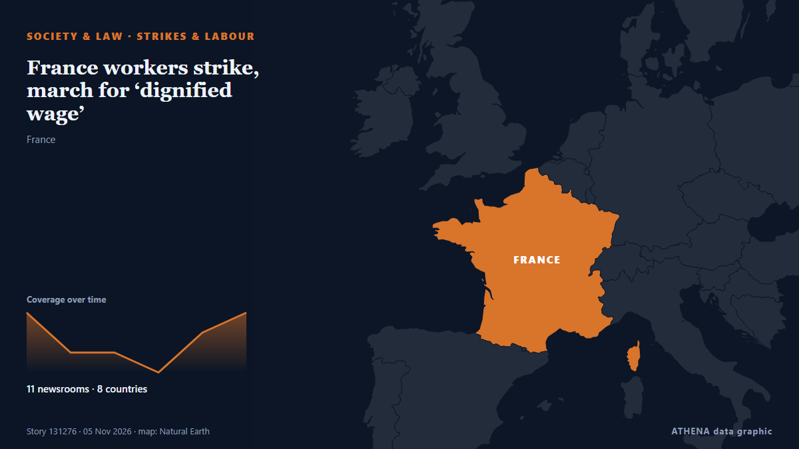

Забастовки и труд
СпонсорПри поддержке  Cybernetics and Artificial Intelligence Lab Welcome to the Cybernetics and Artificial Intelligence Laboratory, established at the Department of Business Administration of the National and Kapodistrian University of Athens. The lab is headed by Professor Dimitrios Thomakos. The lab aims to do research that can be published in top venues. Our research uses tools and methods of Artificial Intelligence, and lies in the following areas: - Forecasting - Decision making - Cyber security - Finance We are always looking forward to collaborating with exceptional students!
Cybernetics and Artificial Intelligence Lab Welcome to the Cybernetics and Artificial Intelligence Laboratory, established at the Department of Business Administration of the National and Kapodistrian University of Athens. The lab is headed by Professor Dimitrios Thomakos. The lab aims to do research that can be published in top venues. Our research uses tools and methods of Artificial Intelligence, and lies in the following areas: - Forecasting - Decision making - Cyber security - Finance We are always looking forward to collaborating with exceptional students!
| 23 окт. | 0 |
|---|---|
| 24 окт. | 0 |
| 25 окт. | 0 |
| 26 окт. | 0 |
| 27 окт. | 0 |
| 28 окт. | 0 |
| 29 окт. | 0 |
| 30 окт. | 0 |
| 31 окт. | 2 |
| 1 нояб. | 1 |
| 2 нояб. | 3 |
| 3 нояб. | 0 |
| 4 нояб. | 5 |
| 5 нояб. | 3 |
Заголовки приводятся на английском языке, как они были опубликованы.

France workers strike, march for ‘dignified wage’
Striking workers marched across France against the rising cost of living on Thursday, with hundreds of thousands of people expected to take to the streets nationwide in a new escalation following… из Vanguard
'Prejudiced and unfair': Türkiye criticizes EU commission’s 2026 report
Foreign Ministry accuses EU of supporting 'unrealistic and legally questionable positions' taken by Greece, Greek Cypriot administration. из Anadolu Agency (English)
Public sector unions threaten to hold 24-hour strike on November 12th
Unions say Government still has to make ‘credible offer’ on a new pay deal. из The Irish Times
Govt, unions reach agreement with Electrolux for new plan, halving job cuts
(ANSA) - ROME, 04 NOV - Business and Made in Italy Minister Adolfo Urso said Wednesday the government and trade unions have reached an agreement with Electrolux for a new business plan for its… из ANSA English
EU to provide €10 million grant to promote sustainable trade with Sri Lanka
Sri Lanka promotes trade and investment opportunities in UK ahead of EXPO 2027. из Ada Derana
Czech public media workers go on strike over a government plan to overhaul their funding
Czech public media workers went on a one-day strike on Tuesday to protest a government plan to overhaul how public broadcasters are funded, legislation that many say would threaten their independence. из The National Herald
Thousands of volunteers build 108 stupas in a day in Bhutan's Gelephu Mindfulness City
Buddhist masters have gathered in Gelephu, Bhutan, to witness the construction of 108 stupas in a single day. из ABC News (International)
Pashinyan: Armenia cannot be a full member of EU and EAEU simultaneously
ArmInfo. Active work must continue to successfully conclude the visa liberalization negotiations between Armenia and the European Union. из Arminfo
Today in Sweden: A roundup of the latest news on Monday
Sweden Democrats and Centre Party deny rumours of secret government talks – and Swedish unions set to unveil wage demands ahead of crucial 2027 negotiations. из The Local Sweden